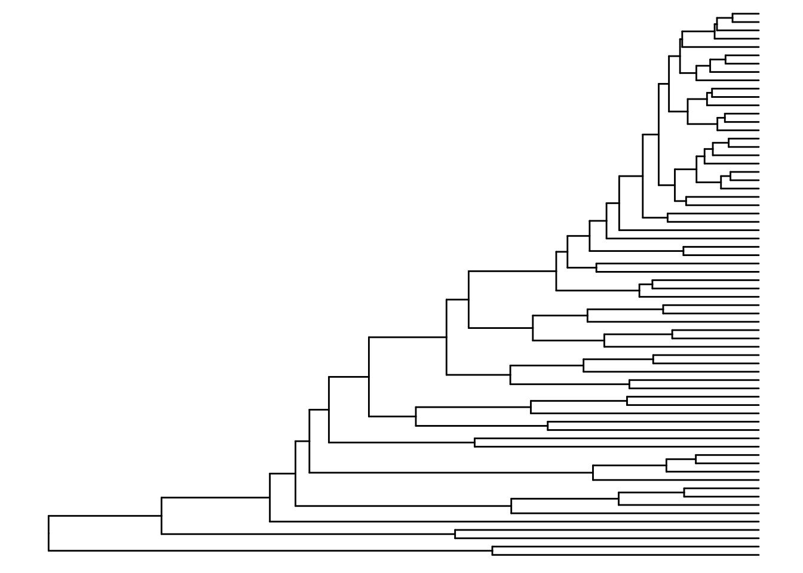
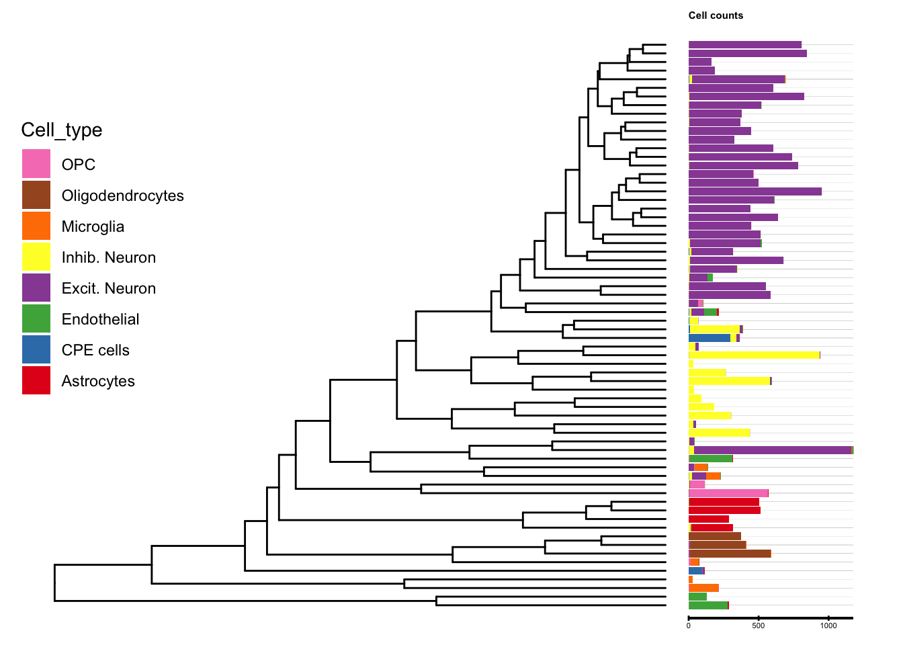
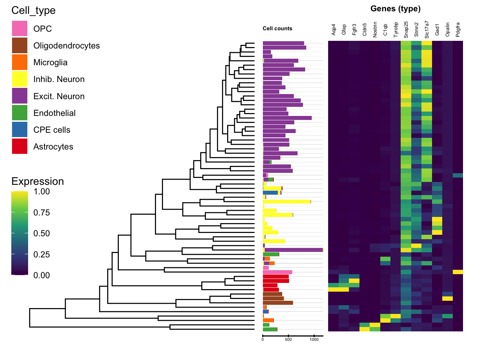
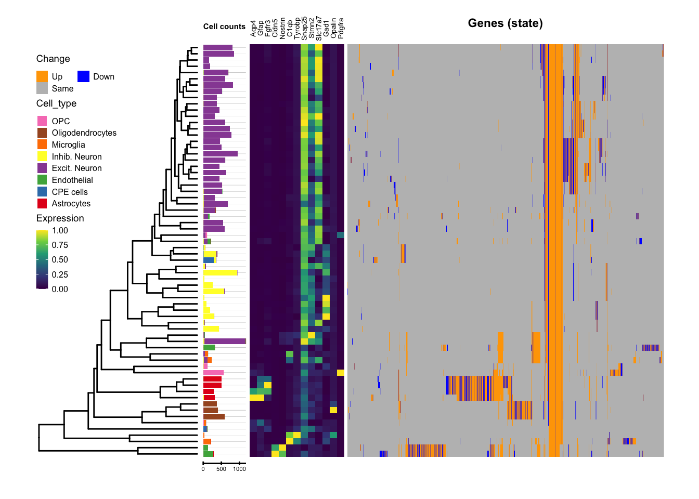
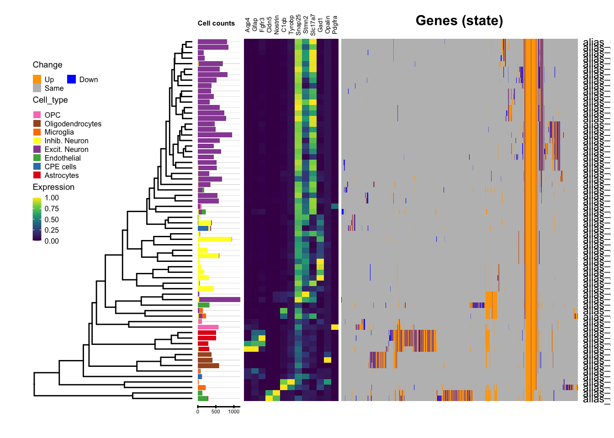
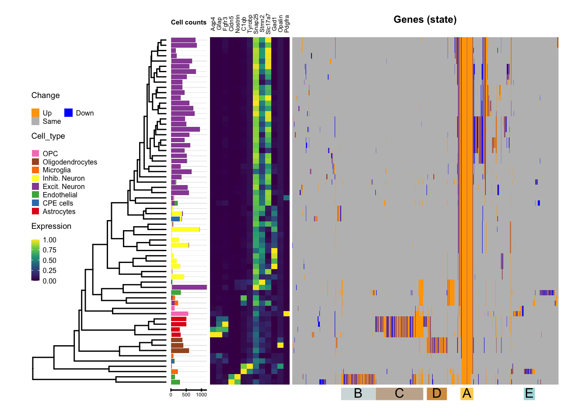
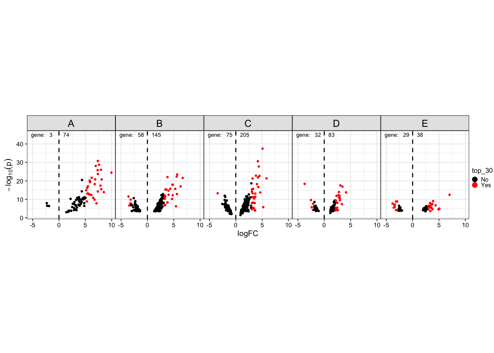
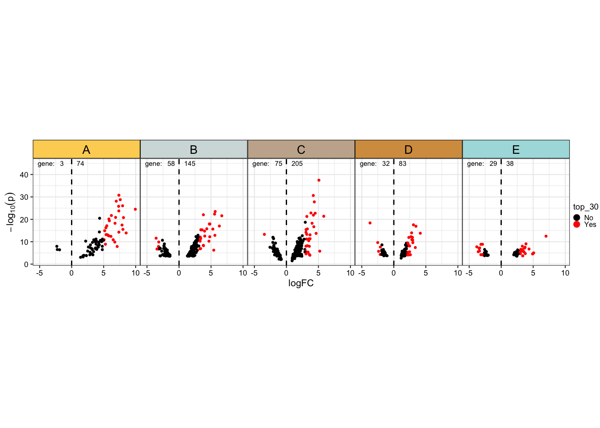
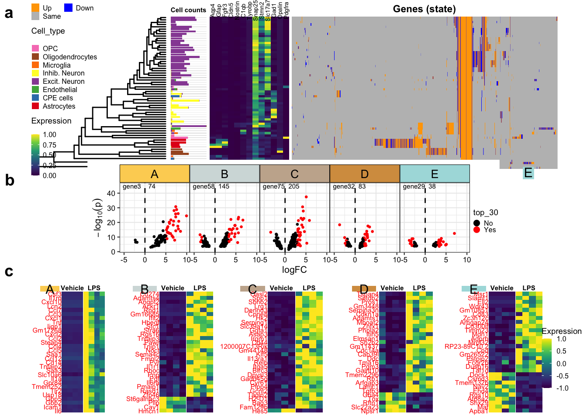

4-visualization
fionarhuang
2020-04-20
Last updated: 2020-04-25
Checks: 7 0
Knit directory: LPS/
This reproducible R Markdown analysis was created with workflowr (version 1.5.0). The Checks tab describes the reproducibility checks that were applied when the results were created. The Past versions tab lists the development history.
Great! Since the R Markdown file has been committed to the Git repository, you know the exact version of the code that produced these results.
Great job! The global environment was empty. Objects defined in the global environment can affect the analysis in your R Markdown file in unknown ways. For reproduciblity it’s best to always run the code in an empty environment.
The command set.seed(20200424) was run prior to running the code in the R Markdown file. Setting a seed ensures that any results that rely on randomness, e.g. subsampling or permutations, are reproducible.
Great job! Recording the operating system, R version, and package versions is critical for reproducibility.
Nice! There were no cached chunks for this analysis, so you can be confident that you successfully produced the results during this run.
Great job! Using relative paths to the files within your workflowr project makes it easier to run your code on other machines.
Great! You are using Git for version control. Tracking code development and connecting the code version to the results is critical for reproducibility. The version displayed above was the version of the Git repository at the time these results were generated.
Note that you need to be careful to ensure that all relevant files for the analysis have been committed to Git prior to generating the results (you can use wflow_publish or wflow_git_commit). workflowr only checks the R Markdown file, but you know if there are other scripts or data files that it depends on. Below is the status of the Git repository when the results were generated:
Ignored files:
Ignored: .Rhistory
Ignored: .Rproj.user/
Untracked files:
Untracked: .gitignore
Untracked: LPS/
Untracked: treeclimbR_article.Rproj
Unstaged changes:
Modified: miRNA/analysis/3-Visualization.Rmd
Note that any generated files, e.g. HTML, png, CSS, etc., are not included in this status report because it is ok for generated content to have uncommitted changes.
There are no past versions. Publish this analysis with wflow_publish() to start tracking its development.
Load packages
suppressPackageStartupMessages({
library(treeclimbR)
library(TreeSummarizedExperiment)
library(parallel)
library(TreeHeatmap)
library(dplyr)
library(ggplot2)
library(ggtree)
library(ggnewscale)
library(viridis)
library(ggrepel)
library(scales)
library(cowplot)
library(ggplotify)
})load data
known_mk <- readRDS("output/known_mk.rds")
se_mk <- readRDS("output/se_mk.rds")
load("output/3-treeclimbR.RData")
cell_info <- readRDS("output/cell_info.rds")
colData(d_se)$group_id <- ifelse(colData(d_se)$group_id == "WT", "Vehicle", "LPS")
# tree
cell_tree <- colTree(tse)
leaf <- showNode(tree = cell_tree, only.leaf = TRUE)Display Tree
# Tree
Fig_0 <- ggtree(cell_tree, ladderize = TRUE)
Fig_0
Display cell counts
d <- dplyr::filter(Fig_0$data, isTip) %>% select(c(label, y))
dd <- cell_info %>%
rename(label = cluster_id) %>%
left_join(d, by='label')Warning: Column `label` joining factor and character vector, coercing into
character vectorcolr <- c("Astrocytes" = "#E41A1C", "CPE cells" = "#377EB8",
"Endothelial" = "#4DAF4A", "Excit. Neuron" = "#984EA3",
"Inhib. Neuron" = "#FFFF33", "Microglia" = "#FF7F00",
"Oligodendrocytes" = "#A65628", "OPC" = "#F781BF")
bar <- ggplot(dd, aes(x = y)) +
geom_bar(aes(fill = cell_type)) +
scale_fill_manual(values = colr) +
theme(legend.position = "none") +
theme(axis.line.x=element_blank(),
axis.text.y=element_blank(),
axis.ticks.y=element_blank(),
axis.title.x=element_blank(),
axis.title.y=element_blank(),
legend.position="none",
panel.background=element_blank(),
panel.border=element_blank(),
panel.grid.major=element_blank(),
panel.grid.minor=element_blank(),
plot.background=element_blank())
bar_df <- ggplot_build(bar)$data[[1]]
vf <- bar_df$fill
names(vf) <- vf
# flip x-y coordinates and scale x
scale_bar <- 1/300
ux <- max(bar_df$ymax)
lx <- min(bar_df$ymin)
# barplot: gap to the tree (2)
gap_tree <- ceiling(max(Fig_0$data$x)) + 0.1
#
ct <- names(colr)
names(ct) <- colr
dat_bar <- bar_df %>%
select(fill, x, xmin, xmax, ymin, ymax) %>%
rename(ymin = xmin,
ymax = xmax,
xmin = ymin,
xmax = ymax,
y = x) %>%
mutate(xmin_s = (xmin-lx)/(ux-lx)*ux*scale_bar+ gap_tree,
xmax_s = (xmax-lx)/(ux-lx)*ux*scale_bar+ gap_tree,
Cell_type = factor(ct[fill], levels = rev(ct)) )
# label cell counts
x_bar_label <- c(0, 500, 1000)
names(x_bar_label) <- as.character(x_bar_label*scale_bar + gap_tree)
dat_bar_ext <- dat_bar %>%
mutate(xmin = min(xmin_s), xmax = max(xmax_s))
Fig_1 <- Fig_0 +
geom_segment(data = dat_bar_ext,
aes(x = xmin, xend = xmax,
y = y, yend = y),
linetype = "solid",
color = "grey80", size = 0.05,
show.legend = FALSE)+
geom_rect(data = dat_bar,
aes(xmin = xmin_s, ymin = ymin,
xmax = xmax_s, ymax = ymax,
fill = Cell_type),
inherit.aes = FALSE) +
scale_fill_manual(values = colr) +
geom_segment(data = dat_bar,
aes (x = min(xmin_s), y = -0.5,
xend = max(xmax_s), yend = -0.5),
size = 0.4) +
annotate("segment",
x = as.numeric(names(x_bar_label)),
y = rep(-0.2, length(x_bar_label)),
xend = as.numeric(names(x_bar_label)),
yend = rep(-0.8, length(x_bar_label)),
size = 0.5) +
annotate("text",
x = as.numeric(names(x_bar_label)),
y = rep(-1.3, length(x_bar_label)),
label= x_bar_label, size = 1.5) +
annotate("text", x = mean(min(dat_bar$xmin_s),max(dat_bar$xmax_s)),
y = max(dat_bar$ymax) + 3, label = "Cell counts",
hjust =0, fontface = "bold", size = 2) +
guides(fill = guide_legend(order = 2, ncol = 2)) +
new_scale_fill() +
theme(legend.position = c(0.1, 0.6))
Fig_1 
Dispaly type markers
## median value of known-marker genes in each leaf
med_mk <- medianByClusterMarker(SE = se_mk,
marker_in_column = FALSE,
column_cluster = "cluster_id",
use_marker = NULL)
mk <- med_mk[, colnames(med_mk) %in% known_mk]
mat_mk <- assays(mk)[[1]]
colnames(mat_mk) <- sub(pattern = ".*?\\.",
replacement = "", colnames(mat_mk))
mat_mk <- mat_mk[, sub(pattern = ".*?\\.",
replacement = "", known_mk)]
# column normalized
mat_type <- apply(mat_mk, 2, FUN = function(x) {
xx <- (x - min(x))/(max(x) - min(x))
return(xx)
})
rownames(mat_type) <- rownames(mat_mk)
colnames(mat_type) <- colnames(mat_mk)
# Tree + cell type + (cell type marker gene)
Fig_2 <- TreeHeatmap(tree = cell_tree, tree_hm_gap = 4.8,
rel_width = 0.6,
tree_fig = Fig_1, hm_data = mat_type,
title_hm = "Genes (type)", show_title = TRUE,
title_offset_y = 8, title_size = 3,
show_colnames = TRUE, colnames_offset_y = 2.5,
colnames_angle = 90, colnames_size = 1.8,
show_rownames = FALSE,
rownames_offset_x = 0.5) +
scale_fill_viridis_c(guide = "colourbar") +
guides(fill = guide_legend(order = 3)) +
new_scale_fill()Scale for 'fill' is already present. Adding another scale for 'fill', which
will replace the existing scale.Fig_2
Display state markers
## state-marker genes
out_sel <- topNodes(object = best_0.05, n = Inf, p_value = 0.05)
head(out_sel) logFC logCPM LR PValue FDR node
1 -2.092002 6.990586 16.43910 5.023810e-05 6.805759e-03 68
2 2.347905 8.637357 36.03596 1.937095e-09 1.120216e-06 68
3 -1.223244 3.870071 18.36970 1.819283e-05 2.986082e-03 114
4 -1.319993 4.989667 13.54257 2.332134e-04 2.224240e-02 121
5 1.765640 2.789971 13.89288 1.935306e-04 1.934645e-02 67
6 -1.846922 6.200939 19.69360 9.090532e-06 1.682786e-03 101
feature adj.p signal.node
1 ENSMUSG00000000058.Cav2 1.508849e-02 TRUE
2 ENSMUSG00000000078.Klf6 2.830108e-06 TRUE
3 ENSMUSG00000000126.Wnt9a 6.877921e-03 TRUE
4 ENSMUSG00000000126.Wnt9a 4.543018e-02 TRUE
5 ENSMUSG00000000275.Trim25 4.000563e-02 TRUE
6 ENSMUSG00000000305.Cdh4 3.943689e-03 TRUEout_sel <- out_sel %>%
filter(abs(logFC) >= 1)
list_sel <- split(out_sel, f = out_sel$feature)
gene_node <- lapply(list_sel, FUN = function(x) {
x$node
})
length(gene_node)[1] 1561sign_sel <- lapply(list_sel, FUN = function(x) {
sign(x$logFC)
})
gene <- sub(pattern = ".*?\\.", replacement = "",
names(gene_node))
df_gene <- data.frame(gene_id = names(gene_node),
gene_sid = gene)
head(df_gene) gene_id gene_sid
1 ENSMUSG00000000058.Cav2 Cav2
2 ENSMUSG00000000078.Klf6 Klf6
3 ENSMUSG00000000126.Wnt9a Wnt9a
4 ENSMUSG00000000275.Trim25 Trim25
5 ENSMUSG00000000305.Cdh4 Cdh4
6 ENSMUSG00000000340.Dbt Dbtmat_state <- lapply(seq_along(gene_node), FUN = function(x) {
node.x <- gene_node[[x]]
leaf.x <- findOS(tree = cell_tree, node = node.x,
only.leaf = TRUE, self.include = TRUE)
ll.x <- lapply(leaf.x, length)
sign.x <- sign_sel[[x]]
sl.x <- rep(sign.x, unlist(ll.x))
vv <- rep(0, length(leaf))
ind <- match(unlist(leaf.x), leaf)
vv[ind] <- sl.x
return(vv)})
mat_state <- do.call(cbind, mat_state)
colnames(mat_state) <- gene
rownames(mat_state) <- transNode(tree = cell_tree,
node = leaf, use.alias = TRUE)
# Tree + cell type + (cell state gene)
Fig_3 <- TreeHeatmap(tree = cell_tree, tree_fig = Fig_2,
rel_width = 2, tree_hm_gap = 13.8,
hm_data = mat_state, cluster_column = TRUE,
show_rownames = FALSE, rownames_offset_x = 0.5,
rownames_size = 3, rownames_hjust = 0,
legend_title_hm = "Change",
title_hm = "Genes (state)", show_title = TRUE,
title_offset_y = 4, title_size = 3,
#dist_method = "manhattan",
dist_method = "binary",
hclust_method = "median") +
scale_fill_gradientn(colors = c("blue", "grey", "orange"),
breaks = c(1, 0, -1),
labels = c("Up", "Same", "Down"),
guide = guide_legend(order = 3)) +
guides(fill = guide_legend(order = 4, ncol = 2)) +
theme(
plot.margin = margin(t = 0, b = 0, r = 1, l = 1, "mm"),
legend.margin = margin(-1,0,0,0, unit="mm"),
legend.position = c(0.1, 0.65),
legend.background = element_rect(fill = NA),
legend.key.size = unit(0.3,"cm"),
legend.text = element_text(size = 6),
legend.title = element_text(size = 7),
legend.spacing.x = unit(1, "mm"),
legend.spacing.y = unit(2, "mm")
) +
ylim(c(-2, 70))Scale for 'fill' is already present. Adding another scale for 'fill', which
will replace the existing scale.Scale for 'y' is already present. Adding another scale for 'y', which will
replace the existing scale.Fig_3Warning: Removed 1 rows containing missing values (geom_text).
Annotate categories
Below figure is to get node labels for cell types
TreeHeatmap(tree = cell_tree, tree_fig = Fig_2,
rel_width = 1.5, tree_hm_gap = 13.8,
hm_data = mat_state, cluster_column = TRUE,
show_rownames = TRUE, rownames_offset_x = 0.5,
rownames_size = 3, rownames_hjust = 0,
legend_title_hm = "Change",
title_hm = "Genes (state)", show_title = TRUE,
title_offset_y = 4, title_size = 4,
#dist_method = "manhattan",
dist_method = "binary",
hclust_method = "average") +
scale_fill_gradientn(colors = c("blue", "grey", "orange"),
breaks = c(1, 0, -1),
labels = c("Up", "Same", "Down"),
guide = guide_legend(order = 3)) +
guides(fill = guide_legend(order = 2, ncol = 2)) +
theme(
plot.margin = margin(t = 0, b = 0, r = 1, l = 1, "mm"),
legend.margin = margin(-1,0,0,0, unit="mm"),
legend.position = c(0.1, 0.65),
legend.background = element_rect(fill = NA),
legend.key.size = unit(0.25,"cm"),
legend.text = element_text(size = 6),
legend.title = element_text(size = 7),
legend.spacing.x = unit(1, "mm"),
legend.spacing.y = unit(2, "mm")
) +
ylim(c(-2, 70)) Scale for 'fill' is already present. Adding another scale for 'fill', which
will replace the existing scale.Scale for 'y' is already present. Adding another scale for 'y', which will
replace the existing scale.Warning: Removed 1 rows containing missing values (geom_text).
# cell-type specific branch
# node number: remove prefix "alias_"
root <- setdiff(cell_tree$edge[, 1], cell_tree$edge[, 2])
micro_node <- 48
olig_node <- shareNode(tree = cell_tree, node = c(16, 31, 34))
endo_node <- shareNode(tree = cell_tree, node = c(43, 54))
#glial_node <- shareNode(tree = cell_tree, node = c(63, 1, 39, 53, 46))
astr_node <- shareNode(tree = cell_tree, node = c(41, 44, 23, 24))
node_list <- list(A = root, B = endo_node, C = astr_node, D = olig_node,
#E = glial_node,
E = micro_node)
br_list <- findOS(tree = cell_tree, node = unlist(node_list),
only.leaf = FALSE, self.include = TRUE)
names(br_list) <- names(node_list)
br_list0 <- br_list
#br_list0$D <- br_list0$C
leaf_list <- findOS(tree = cell_tree, node = unlist(node_list),
only.leaf = TRUE, self.include = TRUE)
list_fv <- c(1, as.list(rep(0.4, 4)))
list_l <- list(A = 0.8, B = 0.5, C = 0.75, D = 0.5, E = 1)
list_u <- list(1, 1, 1, 1, 1)
list_nseq <- list(30, 100, 50, 30, 30)
names(list_fv) <- names(list_l) <- names(list_u) <-names(list_nseq) <- names(node_list)
# Data of last heatmap
ds_df <- getData(tree_hm = Fig_3, type = "heatmap")
is_seq <- function(x, by, num_seq, tol = 1e-5){
x1 <- c(FALSE, abs(diff(x) - by) > tol)
x2 <- cumsum(x1)+1
x3 <- table(x2)
x4 <- which(x3 >= num_seq)
fx <- x[x2 %in% x4]
return(fx)
}
list_df <- list_range <- vector("list", length(node_list))
for (i in seq_along(node_list)) {
x_f <- list_fv[[i]]
x_br <- br_list[[i]]
x_br0 <- br_list0[[i]]
x_leaf <- leaf_list[[i]]
x_ru <- list_u[[i]]
x_rl <- list_l[[i]]
x_nseq <- list_nseq[[i]]
x_df <- ds_df %>%
group_by(variable) %>%
mutate(value_sum = sum(abs(value))) %>%
filter(value_sum <= x_f*length(leaf)) %>% # avoid DS in all cells are picked in cell-type specific
filter(node %in% x_br0) %>%
mutate(value_sum = sum(abs(value))) %>% # recalculate the sum of value
filter(value_sum <= x_ru*length(x_leaf) &
value_sum >= x_rl*length(x_leaf)) %>%
filter(node %in% x_br) %>%
filter(abs(value) == 1) %>%
dplyr::select(variable, x, value_sum) %>%
distinct() %>%
arrange(x)
width <- sort(unique(abs(unique(diff(ds_df$x)))))[2]
x_seq <- is_seq(x = x_df$x, by = width,
num_seq = x_nseq)
x_df <- x_df %>%
filter(x %in% x_seq) %>%
dplyr::select(variable, x) %>%
distinct() %>%
arrange(x)
list_df[[i]] <- x_df
list_range[[i]] <- cbind.data.frame(xmin = range(x_df$x)[1],
xmax = range(x_df$x)[2],
y = min(ds_df$y) - 2,
label= names(node_list)[i],
num = nrow(x_df),
stringsAsFactors = FALSE)
}
df_range <- do.call(rbind, list_range)
range_lab <- df_range %>%
group_by(label) %>%
summarize(y = unique(y),
n = sum(num),
x = mean(range(c(xmin, xmax))))
range_col <- c("#FDD262", "#D3DDDC", "#C7B19C",
"#D69C4E", "#ABDDDE", "#74A089" )
names(range_col) <- unique(df_range$label)
Fig_4 <- Fig_3 +
new_scale_color() +
geom_segment(data = df_range,
aes(x =xmin, xend = xmax,
y = y-0.25, yend =y-0.25, color = label),
size = 5, show.legend = FALSE,
inherit.aes = FALSE) +
scale_colour_manual(values = range_col) +
geom_text(data = range_lab,
aes(x, y, label = label),
size = 4) +
theme(
plot.margin = margin(t = 0, b = 0, r = 1, l = 1, "mm"),
legend.margin = margin(-1,0,0,0, unit="mm"),
legend.position = c(0.1, 0.55),
legend.background = element_rect(fill = NA),
legend.key.size = unit(0.25,"cm"),
legend.text = element_text(size = 6),
legend.title = element_text(size = 7),
legend.spacing.x = unit(1, "mm"),
legend.spacing.y = unit(3, "mm")
) +
ylim(c(-2, 70))Scale for 'y' is already present. Adding another scale for 'y', which will
replace the existing scale.Fig_4Warning: Removed 1 rows containing missing values (geom_text).
DS: volcano plot
gene_10 <- node_list
gene_30 <- node_list
dat_vcn <- list_df
for (i in seq_along(node_list)) {
x_df <- list_df[[i]]
x_node <- node_list[[i]]
v_df <- x_df$variable
v_gene <- df_gene %>%
filter(gene_sid %in% v_df) %>%
mutate_if(is.factor, as.character)
x_out <- out %>%
filter(node == x_node) %>%
filter(feature %in% v_gene$gene_id) %>%
mutate(gene_sid = sub(pattern = ".*?\\.", replacement = "", feature))
table(sign(x_out$logFC))
t_30 <- sort(abs(x_out$logFC), decreasing = TRUE)[1:30]
dat_vcn[[i]] <- x_out %>%
mutate(top_30 = ifelse(abs(logFC) %in% t_30, "Yes", "No"),
label = names(node_list)[i],
num_up = table(sign(x_out$logFC))["1"],
num_down = table(sign(x_out$logFC))["-1"],
ngene = nrow(x_out))
gene_30[[i]] <- dat_vcn[[i]] %>%
filter(abs(logFC) %in% t_30) %>%
arrange(logFC) %>%
select(feature) %>% unlist() %>% as.character()
}
dat_vcn <- do.call(rbind, dat_vcn)
#%>% mutate(gene_top30 = ifelse(top_30 == "Yes",gene_sid, ""))
head(dat_vcn) logFC logCPM LR PValue FDR node
1 7.377494 4.788228 136.2880 1.725904e-31 5.268270e-27 67
2 7.590873 5.467868 127.1549 1.718264e-29 3.960471e-25 67
3 6.969681 3.318266 124.0657 8.150044e-29 1.736750e-24 67
4 7.955247 3.189672 114.7026 9.142947e-27 1.259289e-22 67
5 7.336919 3.927066 113.7025 1.514039e-26 1.899974e-22 67
6 9.947832 4.414657 107.6264 3.245367e-25 3.243684e-21 67
feature gene_sid top_30 label num_up num_down ngene
1 ENSMUSG00000054072.Iigp1 Iigp1 Yes A 74 3 77
2 ENSMUSG00000029380.Cxcl1 Cxcl1 Yes A 74 3 77
3 ENSMUSG00000012428.Steap4 Steap4 Yes A 74 3 77
4 ENSMUSG00000035373.Ccl7 Ccl7 Yes A 74 3 77
5 ENSMUSG00000058427.Cxcl2 Cxcl2 Yes A 74 3 77
6 ENSMUSG00000038067.Csf3 Csf3 Yes A 74 3 77fig_vcn <- ggplot(dat_vcn, aes(x = logFC, y = -log10(PValue))) +
geom_vline(xintercept = 0, linetype = "dashed") +
annotate("text",
x = -5.3, y = 45, label = "gene:",
hjust = 0, size = 2) +
geom_text(data = . %>% select(num_down, label) %>% distinct,
x = -1.8, y = 45, aes(label = paste(num_down)),
hjust = 0, size = 2) +
geom_text(data = . %>% select(num_up, label) %>% distinct,
x = 0.8, y = 45, aes(label = paste0(num_up)),
hjust = 0, size = 2) +
facet_wrap(~label, nrow = 1) +
geom_point(aes(color = top_30), size = 0.5) +
scale_color_manual(values = c("black", "red")) +
guides(color = guide_legend(override.aes = list(size = 2))) +
theme_bw(base_size = 8) +
theme(
aspect.ratio = 1,
#plot.margin = unit(c(0, 0, 0.2, 0), "cm"),
#panel.grid = element_blank(),
panel.spacing = unit(0, "lines"),
axis.text = element_text(color = "black"),
legend.key.size= unit(2, "mm"),
plot.title = element_text(hjust = 0.5),
legend.text = element_text(size = 6),
legend.title = element_text(size = 7),
legend.position="right",
legend.margin = margin(t = 0, b = 0, r = 2, l = 0),
legend.box.margin=margin(-5, -5, -10, -5),
strip.background = element_rect(colour = "black", fill = "gray90"),
strip.text.x = element_text(color = "black", size = 10),
strip.text.y = element_text(color = "black", size = 10)) +
ylab(expression(-log[10](p)))
fig_vcn
# change the fill color of panel title
g <- ggplot_gtable(ggplot_build(fig_vcn))
stripr <- which(grepl('strip-t', g$layout$name))
fills <- range_col
k <- 1
for (i in stripr) {
j <- which(grepl('rect', g$grobs[[i]]$grobs[[1]]$childrenOrder))
g$grobs[[i]]$grobs[[1]]$children[[j]]$gp$fill <- fills[k]
k <- k+1
}
fig_vcn <- as.ggplot(g)
fig_vcn
top-30: heatmap
alias_list <- lapply(node_list, FUN = function(x){
transNode(tree = cell_tree, node = x, use.alias = TRUE)
})
fig_hp <- vector("list", length(alias_list))
for (i in seq_along(alias_list)) {
x_alias <- alias_list[[i]]
x_gene <- gene_30[[i]]
# observed counts in samples
mat_1 <- assays(d_se)[[x_alias]]
mat_1 <- edgeR::cpm(mat_1)
mat_2 <- mat_1[x_gene, ]
mat_3 <- t(apply(mat_2, 1, scale))
colnames(mat_3) <- colnames(mat_2)
rownames(mat_3) <- sub(pattern = ".*?\\.", replacement = "", x_gene)
x_tree <- ape::as.phylo(hclust(dist(mat_3)))
x_fig <- ggtree(x_tree)
col_split <- colData(d_se)$group_id
names(col_split) <- colnames(d_se)
split_label <- col_split
names(split_label) <- split_label
fig.i <- Heatmap(hm_data = mat_3,
column_split = col_split,
column_split_label = split_label,
column_split_gap = 0.05,
column_split_label_size = 2,
column_split_label_offset_y = 1.5,
show_row_tree = FALSE,
show_rownames = TRUE,
rownames_size = 2,
rownames_position = "left",
rownames_offset_x = -0.01,
rownames_color = "red",
rownames_hjust = 1,
legend_title_hm = "Expression",
cluster_row = FALSE
) +
expand_limits(x = -10) +
scale_fill_viridis(option = "D",
limits = c(-1, 1),
oob = squish)
dat.i <- getData(tree_hm = fig.i, type = "row_name")
lab.i <- dat.i %>%
mutate(y = max(y), x = min(x),
label = names(alias_list)[i]) %>%
select(x, y, label) %>%
distinct()
fig_hp[[i]] <- fig.i +
geom_rect(data = lab.i,
aes(xmin = x-4, xmax = x-0.4,
ymin = y + 0.5, ymax = y+2),
fill = range_col[lab.i$label]) +
annotate("text", x = lab.i$x - 2.2,
y = lab.i$y + 1.25, label = lab.i$label)
}Scale for 'fill' is already present. Adding another scale for 'fill', which
will replace the existing scale.
Scale for 'fill' is already present. Adding another scale for 'fill', which
will replace the existing scale.
Scale for 'fill' is already present. Adding another scale for 'fill', which
will replace the existing scale.
Scale for 'fill' is already present. Adding another scale for 'fill', which
will replace the existing scale.
Scale for 'fill' is already present. Adding another scale for 'fill', which
will replace the existing scale.legend <- get_legend(
fig_hp[[1]] +
theme(legend.box.margin = margin(t = 0, b = 0, r = 5, l = -5),
legend.key.size= unit(3, "mm"),
legend.title = element_text(size = 7),
legend.text = element_text(size = 6))
)
fig_b1 <- plot_grid(
fig_hp[[1]] + theme(plot.margin = margin(t = -5, b = 0,
r = 1, l = 0, "mm"),
legend.position="none"),
fig_hp[[2]] + theme(plot.margin = margin(t = -5, b = 0,
r = 1, l = -8, "mm"),
legend.position="none"),
fig_hp[[3]] + theme(plot.margin = margin(t = -5, b = 0,
r = 1, l = -9, "mm"),
legend.position="none"),
fig_hp[[4]] + theme(plot.margin = margin(t = -5, b = 0,
r = 1, l = -8, "mm"),
legend.position="none"),
fig_hp[[5]] + theme(plot.margin = margin(t = -5, b = 0,
r = 1, l = -8, "mm"),
legend.position="none"),
# fig_hp[[6]] + theme(plot.margin = margin(t = -5, b = 0,
# r = 1, l = -12, "mm"),
# legend.position="none"),
nrow = 1)
fig_b2 <- plot_grid(fig_b1, legend, rel_widths = c(0.945, 0.055),
nrow = 1)
hp_vcn <- plot_grid(Fig_4,
fig_vcn +
theme(plot.margin = margin(t = -8, b = 0,
r = 1, l = 1, "mm")),
fig_b2 +
theme(plot.margin = margin(t = 5, b = 0,
r = 1, l = 1, "mm")),
rel_heights = c(2, 1, 1.5),
rel_widths = 1, nrow = 3,
labels = c("a", "b", "c"),
label_y = c(1, 1.2, 1.15))Warning: Removed 1 rows containing missing values (geom_text).hp_vcn
Genes in each category
DS genes in each category are sorted by their logFC.
gene_list <- lapply(seq_along(list_df),
FUN = function(i) {
x_df <- list_df[[i]]
x_node <- node_list[[i]]
v_df <- x_df$variable
v_gene <- df_gene %>%
filter(gene_sid %in% v_df) %>%
mutate_if(is.factor, as.character)
out %>%
filter(node == x_node) %>%
filter(feature %in% v_gene$gene_id) %>%
mutate(gene_sid = sub(pattern = ".*?\\.", replacement = "", feature)) %>%
arrange(logFC) %>%
select(feature) %>% unlist() %>% as.character()
})
names(gene_list) <- names(list_df) <- names(node_list)
lapply(gene_list, head)$A
[1] "ENSMUSG00000020101.Vsir" "ENSMUSG00000030737.Slco2b1"
[3] "ENSMUSG00000071341.Egr4" "ENSMUSG00000032231.Anxa2"
[5] "ENSMUSG00000000275.Trim25" "ENSMUSG00000057143.Trim12c"
$B
[1] "ENSMUSG00000066842.Hmcn1" "ENSMUSG00000007655.Cav1"
[3] "ENSMUSG00000031775.Pllp" "ENSMUSG00000052544.St6galnac3"
[5] "ENSMUSG00000037754.Ppp1r16b" "ENSMUSG00000019888.Mgat4c"
$C
[1] "ENSMUSG00000048001.Hes5" "ENSMUSG00000086296.D030055H07Rik"
[3] "ENSMUSG00000087259.2610035D17Rik" "ENSMUSG00000041261.Car8"
[5] "ENSMUSG00000021466.Ptch1" "ENSMUSG00000040430.Pitpnc1"
$D
[1] "ENSMUSG00000043659.Npsr1" "ENSMUSG00000038267.Slc22a23"
[3] "ENSMUSG00000039316.Rftn1" "ENSMUSG00000041272.Tox"
[5] "ENSMUSG00000025892.Gria4" "ENSMUSG00000041377.Ninj2"
$E
[1] "ENSMUSG00000024897.Apba1" "ENSMUSG00000055435.Maf"
[3] "ENSMUSG00000071669.Snx29" "ENSMUSG00000021983.Atp8a2"
[5] "ENSMUSG00000030844.Rgs10" "ENSMUSG00000027293.Ehd4" lapply(gene_list, length)$A
[1] 77
$B
[1] 203
$C
[1] 280
$D
[1] 115
$E
[1] 67nodes detected in each category
# signal nodes (node) - genes (feature)
df_signal <- topNodes(object = best_0.05, n = Inf, p_value = 0.05)
df_report <- lapply(seq_along(gene_list), FUN = function(x) {
message(x)
# frequences of nodes detected in each category
df.x <- df_signal %>%
filter(feature %in% gene_list[[x]])
xt <- table(df.x$node)
nodeE <- unlist(node_list, use.names = FALSE)[x]
data.frame(category = names(gene_list)[x],
node = as.numeric(names(xt)),
freq = as.vector(xt),
prop = as.vector(xt)/length(gene_list[[x]]),
node_true = nodeE) %>%
arrange(-prop)
})12345# category : category
# node : detected nodes
# freq: how many genes in each category are detected in each node
# prop: freq/length(gene) in each category
# node_true: the branch node of cell-type specific branch
df_report <- do.call(rbind, df_report)
df_report2 <- df_report %>%
group_by(category) %>%
filter(prop > 0.5) %>%
left_join(Fig_0$data) %>%
select(category, node, freq, prop, node_true,x, y)Joining, by = "node"df_report2# A tibble: 5 x 7
# Groups: category [5]
category node freq prop node_true x y
<fct> <dbl> <int> <dbl> <dbl> <dbl> <dbl>
1 A 67 54 0.701 67 0 3.60
2 B 68 202 0.995 68 9.09 1.5
3 C 75 225 0.804 75 11.2 10.9
4 D 89 113 0.983 89 11.7 7.75
5 E 48 67 1 48 14.5 3 # this is avoid overlap in texts
Fig_4u <- Fig_4 +
new_scale_fill() +
new_scale_color() +
geom_point(data = df_report2, aes(x, y, color = category),
size = 3,
inherit.aes = FALSE, show.legend = FALSE) +
geom_text(data = df_report2,
aes(x = x, y = y, label = category)) +
guides(fill = guide_legend(order = 2, ncol = 2)) +
scale_fill_manual(values = range_col) +
scale_color_manual(values = range_col)
hp_vcn <- plot_grid(Fig_4u,
fig_vcn +
theme(plot.margin = margin(t = -3, b = 0,
r = 1, l = 1, "mm")),
fig_b2 +
theme(plot.margin = margin(t = 2, b = 0,
r = 1, l = -5, "mm")),
rel_heights = c(1.8, 1, 1.4),
rel_widths = 1, nrow = 3,
labels = c("a", "b", "c"),
label_y = c(1, 1.15, 1.05))Warning: Removed 1 rows containing missing values (geom_text).hp_vcn
ggsave(filename = "output/LPS.eps", hp_vcn, width = 8, height = 8, units = "in")
sessionInfo()R version 3.6.1 (2019-07-05)
Platform: x86_64-apple-darwin15.6.0 (64-bit)
Running under: macOS Mojave 10.14.4
Matrix products: default
BLAS: /Library/Frameworks/R.framework/Versions/3.6/Resources/lib/libRblas.0.dylib
LAPACK: /Library/Frameworks/R.framework/Versions/3.6/Resources/lib/libRlapack.dylib
locale:
[1] en_US.UTF-8/en_US.UTF-8/en_US.UTF-8/C/en_US.UTF-8/en_US.UTF-8
attached base packages:
[1] parallel stats4 stats graphics grDevices utils datasets
[8] methods base
other attached packages:
[1] ggplotify_0.0.4 cowplot_1.0.0
[3] scales_1.1.0 ggrepel_0.8.1
[5] viridis_0.5.1 viridisLite_0.3.0
[7] ggnewscale_0.4.0 ggtree_2.1.6
[9] ggplot2_3.3.0 dplyr_0.8.5
[11] TreeHeatmap_0.1.0 treeclimbR_0.1.1
[13] TreeSummarizedExperiment_1.3.0 SingleCellExperiment_1.8.0
[15] SummarizedExperiment_1.16.0 DelayedArray_0.12.0
[17] BiocParallel_1.20.0 matrixStats_0.55.0
[19] Biobase_2.46.0 GenomicRanges_1.38.0
[21] GenomeInfoDb_1.22.0 IRanges_2.20.0
[23] S4Vectors_0.24.0 BiocGenerics_0.32.0
[25] workflowr_1.5.0
loaded via a namespace (and not attached):
[1] backports_1.1.6 circlize_0.4.8
[3] diffcyt_1.6.1 plyr_1.8.5
[5] igraph_1.2.4.1 lazyeval_0.2.2
[7] ConsensusClusterPlus_1.50.0 splines_3.6.1
[9] flowCore_1.52.0 fda_2.4.8
[11] TH.data_1.0-10 digest_0.6.25
[13] htmltools_0.4.0 fansi_0.4.1
[15] magrittr_1.5 CytoML_1.12.0
[17] cluster_2.1.0 ks_1.11.6
[19] limma_3.42.0 ComplexHeatmap_2.2.0
[21] RcppParallel_4.4.4 R.utils_2.9.0
[23] sandwich_2.5-1 flowWorkspace_3.34.0
[25] colorspace_1.4-1 rrcov_1.4-7
[27] xfun_0.11 crayon_1.3.4
[29] RCurl_1.95-4.12 jsonlite_1.6.1
[31] hexbin_1.28.0 graph_1.64.0
[33] lme4_1.1-21 dirmult_0.1.3-4
[35] survival_2.44-1.1 zoo_1.8-6
[37] ape_5.3 glue_1.4.0
[39] flowClust_3.24.0 gtable_0.3.0
[41] zlibbioc_1.32.0 XVector_0.26.0
[43] GetoptLong_0.1.7 ggcyto_1.14.0
[45] IDPmisc_1.1.19 Rgraphviz_2.30.0
[47] shape_1.4.4 DEoptimR_1.0-8
[49] mvtnorm_1.0-11 edgeR_3.28.0
[51] Rcpp_1.0.4 clue_0.3-57
[53] gridGraphics_0.4-1 tidytree_0.3.3
[55] openCyto_1.24.0 mclust_5.4.5
[57] FlowSOM_1.18.0 tsne_0.1-3
[59] RColorBrewer_1.1-2 ellipsis_0.3.0
[61] farver_2.0.3 pkgconfig_2.0.3
[63] XML_3.98-1.20 R.methodsS3_1.7.1
[65] flowViz_1.50.0 utf8_1.1.4
[67] locfit_1.5-9.1 labeling_0.3
[69] reshape2_1.4.3 flowStats_3.44.0
[71] tidyselect_1.0.0 rlang_0.4.5
[73] later_1.0.0 munsell_0.5.0
[75] tools_3.6.1 cli_2.0.2
[77] evaluate_0.14 stringr_1.4.0
[79] yaml_2.2.0 knitr_1.26
[81] fs_1.3.1 robustbase_0.93-5
[83] purrr_0.3.3 RBGL_1.62.1
[85] nlme_3.1-142 R.oo_1.23.0
[87] aplot_0.0.4 compiler_3.6.1
[89] png_0.1-7 treeio_1.11.2
[91] tibble_3.0.0 pcaPP_1.9-73
[93] stringi_1.4.6 lattice_0.20-38
[95] Matrix_1.2-17 nloptr_1.2.1
[97] vctrs_0.2.4 pillar_1.4.3
[99] lifecycle_0.2.0 BiocManager_1.30.10
[101] GlobalOptions_0.1.1 data.table_1.12.6
[103] bitops_1.0-6 corpcor_1.6.9
[105] patchwork_1.0.0 httpuv_1.5.2
[107] R6_2.4.1 latticeExtra_0.6-28
[109] promises_1.1.0 KernSmooth_2.23-15
[111] gridExtra_2.3 codetools_0.2-16
[113] boot_1.3-23 MASS_7.3-51.4
[115] gtools_3.8.1 assertthat_0.2.1
[117] rprojroot_1.3-2 rjson_0.2.20
[119] withr_2.1.2 mnormt_1.5-5
[121] multcomp_1.4-10 GenomeInfoDbData_1.2.2
[123] ncdfFlow_2.32.0 grid_3.6.1
[125] tidyr_1.0.2 minqa_1.2.4
[127] rvcheck_0.1.8 rmarkdown_1.17
[129] git2r_0.26.1 base64enc_0.1-3
[131] ellipse_0.4.1